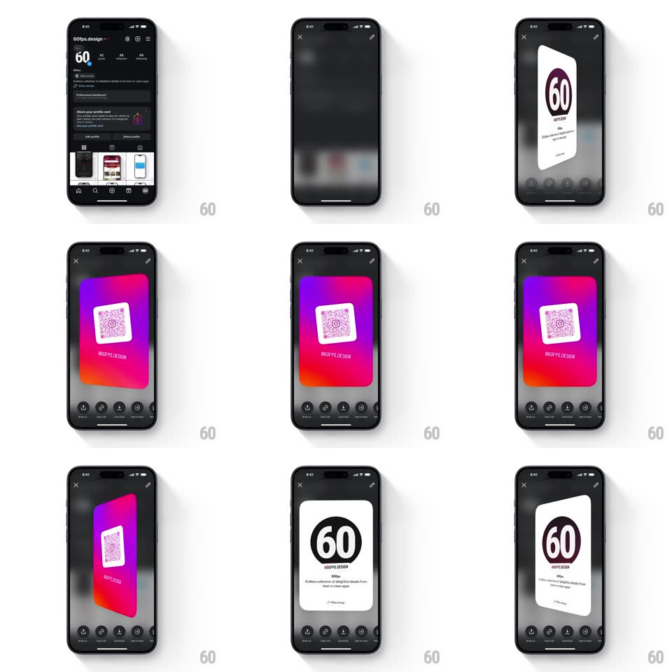

Media
Frame-by-frame

Rebuild this interaction 1:1: Instagram's share-profile card - a double-sided card popup (front: Instagram-gradient card with QR code and username; back: white card with the profile's 60-style logo mark and bio) that flips between faces and tilts in 3D with springy physics when dragged.

Rebuild this interaction 1:1: Instagram's share-profile card - a double-sided card popup (front: Instagram-gradient card with QR code and username; back: white card with the profile's 60-style logo mark and bio) that flips between faces and tilts in 3D with springy physics when dragged. ## Integration Integration: stack-agnostic spec - springs given as stiffness/damping, timed motions as duration + curve; map every value to your framework and animation library of choice. ## Scene Dimmed blurred profile behind a centered rounded card. Front face: purple-pink-orange gradient, centered QR in a white rounded square, username below. Back face: white card, large circular logo, name, handle, and one-line bio. Bottom row of share actions; X close and edit icons top. ## Motion spec Pattern: 3D flip card with drag tilt. - Entry: the card scales up from 0.8 with a spring (stiffness ~300, damping ~20, slight overshoot, 450ms) while the backdrop blurs in (250ms). - Drag: the card tilts toward the finger in 3D (rotateX/rotateY up to +/-18deg, direct touch mapping with a soft perspective, ~1000px), like holding a physical card by its corner. - Release: the tilt springs back to flat (spring ~260/18, visible wobble, ~600ms). - Tap (or horizontal fling): the card flips 180deg around Y (spring ~280/22, 700ms), faces swapping at 90deg; a subtle scale dip (1 -> 0.94 -> 1) rides the flip. - The gradient face keeps a soft inner shadow that shifts with tilt for depth. ## Calibration - The release wobble is the signature - under-damped enough to oscillate twice. - Both faces are fully rendered (no mirror-image flash) - content swaps at the flip's edge-on moment. ## Reduced motion Flip becomes a 300ms crossfade; tilt disabled. ## Don't miss - The QR face gradient is Instagram's purple -> pink -> orange diagonal. - The card casts a moving shadow on the backdrop that follows the tilt direction.